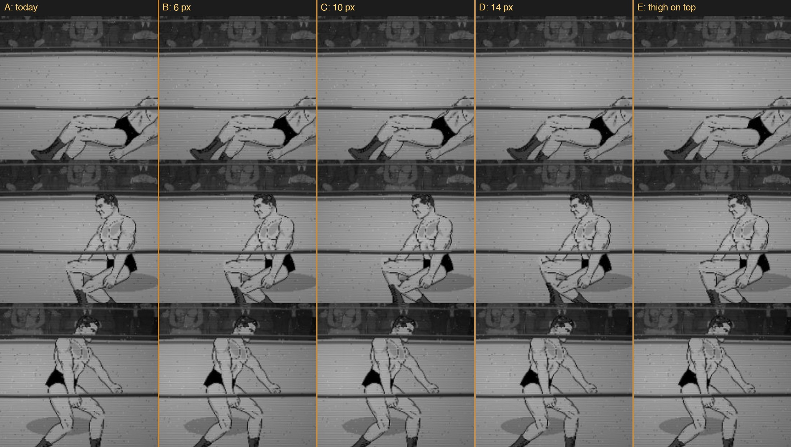
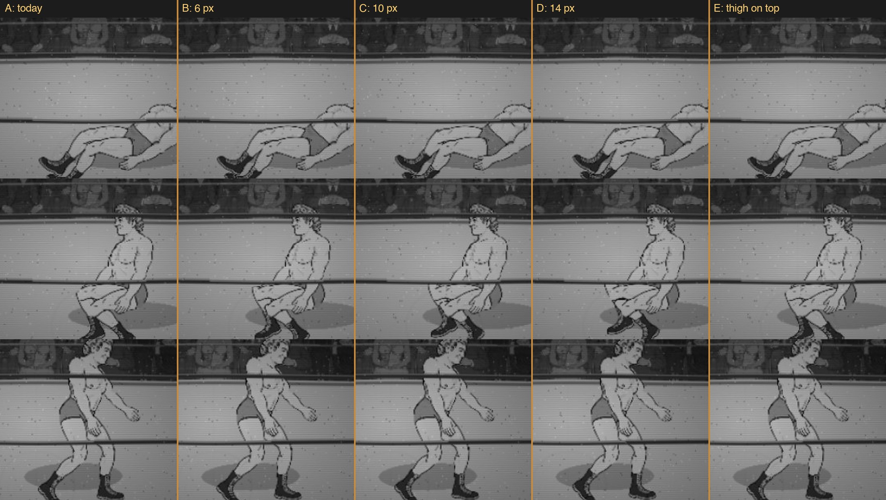

G1b: one question
Which column has the cleanest knee? Look only at where the thigh meets the shin. You're looking for a notch, a gap
or a visible cut edge at the joint. Answer with a letter. Lou and George can get different letters.
A is today. B, C and D tuck the shin further into the thigh as the knee bends (standing legs don't change). E is today with the thigh drawn on top of the shin.
The three rows are the three worst moments of the get-up: sitting up onto the knee, kneeling, and pushing up.
The measurement says the gap shrinks the most at D on Lou and at C on George. If they look the same to you, pick C.
Lou

George

Moving versions of every column are on the full page, further down.